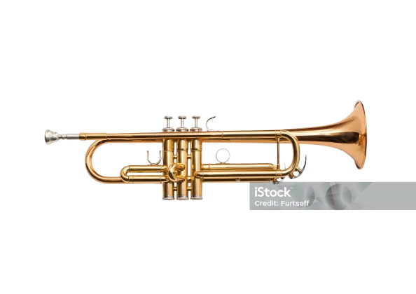

The trumpet is a versatile and prominent brass instrument with a rich history. Family: Brass instrument. Sound: Known for its bright, brilliant, and powerful tone. Construction: Modern trumpets are typically made of brass tubing bent twice into a rounded shape, with a mouthpiece at one end and a flared bell at the other. How it Works: Sound is produced by vibrating the lips (buzzing) into the mouthpiece. Valves are used to change the length of the tubing, which in turn changes the pitch. A longer tube produces a lower pitch, and a shorter tube produces a higher pitch. Valves: Most modern trumpets have three valves (some have four). Each valve, when pressed, diverts air through a corresponding slide, increasing the length of the tubing and lowering the pitch by a specific interval (e.g., the first valve lowers the pitch by a whole step, the second by a half step, and the third by a step and a half). History: The trumpet is one of the oldest brass instruments, with origins dating back thousands of years to ancient Egypt. Early versions were used for signaling and ceremonial purposes. The addition of valves in the 18th century transformed the trumpet into a fully chromatic musical instrument. Where it's Used: Trumpets are used in a wide variety of musical ensembles and genres, including: Orchestras, Concert bands, Marching bands, Jazz ensembles and combos Mexican mariachi bands Popular music (rock, pop, dance) Types of Trumpets: While the most common is the B♭ trumpet, other types exist, such as the piccolo trumpet (highest register) and the bass trumpet (pitched lower than the standard trumpet). The cornet and flugelhorn are related instruments. Notable Players: Many famous musicians, particularly in jazz, have made significant contributions to the trumpet's popularity, including Louis Armstrong and Miles Davis. In essence, the trumpet is a powerful and expressive brass instrument capable of producing a wide range of notes and sounds, used in various musical contexts worldwide.
